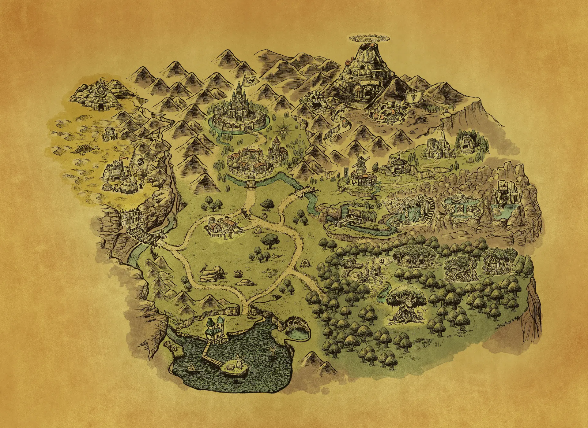

SEU DIÁRIO DE AVENTURA
Sua jornada por Hyrule.
Um atlas para explorar. Um diário para não esquecer. Escolha uma região e acompanhe cada descoberta.
0%
0 / 0objetivos concluídos
ESCOLHA UMA REGIÃO
O reino de Hyrule
Toque em uma região para abrir seu mapa detalhado.

Carregando mapa…
S · Skulltula♥ · Coração! · Missão✓ · Concluído
SEU PRÓXIMO PASSO
Todas as regiões
Salvo no aparelho
Seu progresso fica neste navegador. Use “Meu progresso” para transferi-lo.